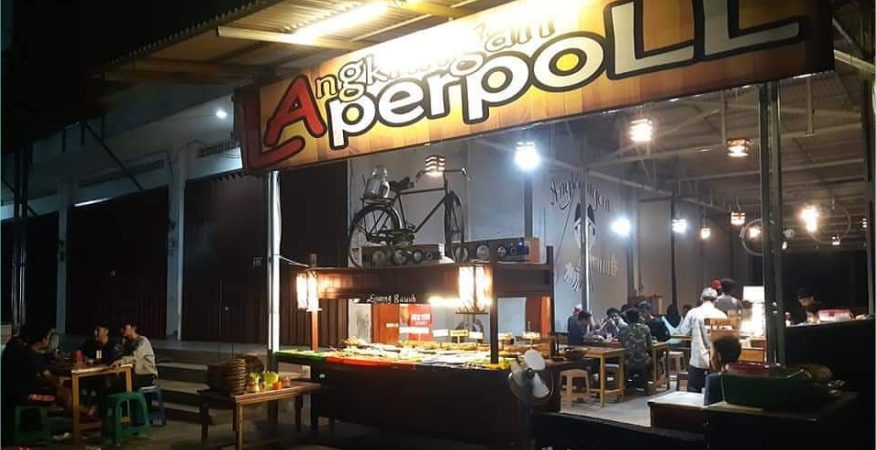

Di Posting Oleh ADMIN

Angkringan Laperpoll
Alamat: Jalan Satu, Gn. Samarinda, Kec. Balikpapan Utara, Kota Balikpapan, Kalimantan Timur 76124
Buka setiap hari 17.00 – 04.30
Cari tempat nongkrongmu di Balikpapan & temukan sekarang juga tempat favoritmu
Temukan info terbaru tentang tempat-tempat baru untuk kamu kunjungi
Alamat: Jalan Satu, Gn. Samarinda, Kec. Balikpapan Utara, Kota Balikpapan, Kalimantan Timur 76124
Buka setiap hari 17.00 – 04.30

Alamat : Jl. Soekarno Hatta KM 3 (Sebelah Klinik Mitra Sehat), Batu Ampar, Balikpapan Selatan, Balikpapan
Buka setiap hari 00:00 - 01:00, 10:00 - 23:59

Alamat : Jalan Sukarno Hatta Km2, No12, Rt48 Kelurahan, Gn. Samarinda, Kec. Balikpapan Utara, Kota Balikpapan, Kalimantan Timur 76125
Buka setiap hari 10.00-00.00